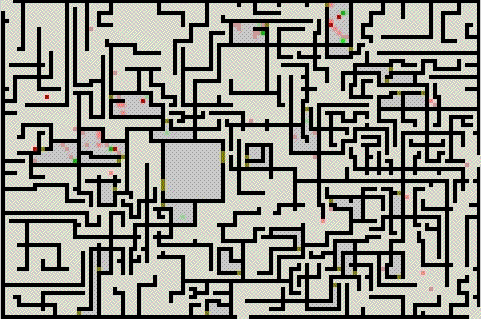
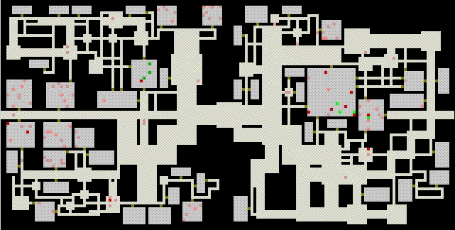

Chokepoint - Designs
Chokepoints are points where a player must pass through in order to get
from the entrance to the exit, or the big treasure room, or any other objective
the player might have. They are an integral part of our plans for
intelligent maps: These maps will
include precomputed paths to all chokepoints, so the AI will have an easy time
getting there and will be able to look pretty smart without having to compute
too much. On the labyrinth map, the entrance is at the left top, and three
exits are at and around the right bottom of the map. Two closed Crawlers
starting out from the pre-placed room ensure that the room is a chokepoint between
the entrance and every exit. Other design Crawlers ensure that the paths to the
exits are quite long and convoluted. The two Crawlers starting off towards the right
edge of the map are a Crawler-pair: One of them is closed and will
in most cases (but not all) connect with the outside wall, the other is
open - but it is randomly decided
which one is which. This makes it possible to have very different paths through
dungeons made with the same design file.
In this design the areas around the design Crawlers get more walls per
unit of space than the area towards the left top which is dominated by
RandCrawlers. In general, it is easy to have labyrinths with quite
different characteristics in different parts of the map.
After the Crawlers have done their thing, rooms are created in the labyrinth.
This process takes considerable time on a map of this size (though it speeds up
towards the end), and if you try to close the window while it is
under way, you will only get a response when the next room is found and the
window is updated. Sorry for that, but this is only a demo program.
chokepoint in labyrinth

The chokepoint in the dungeon is the pre-placed open space in the center of
the map. This design is tuned more towards creating tunnels than rooms, although
plenty of rooms still get made.
chokepoint in dungeon
